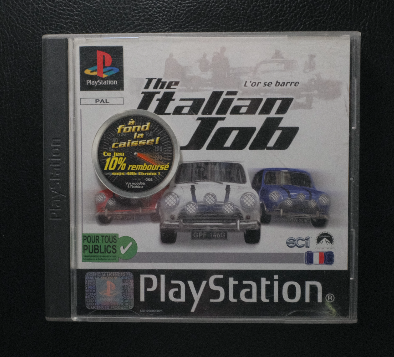
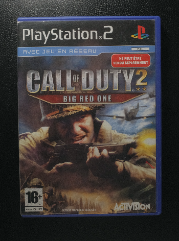
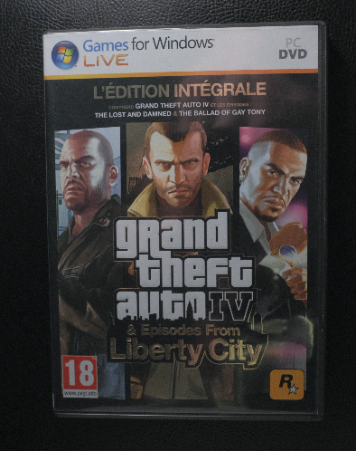
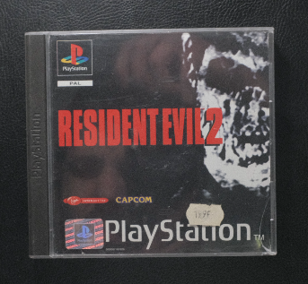

Afin de connaitre mes inspirations de programmation, je vous livre l’historique des jeux vidéo auxquels j’ai joué.
J'ai commencé avec des jeux sur PlayStation 1 : Taken 3, Duke Nukem, Time to Kill, Land of the Babes (terminé une 10aine de fois), Tomb Riders. Les jeux qui m’ont le plus marqué sont Medal Of Honors 1, Underground (terminé une 10aine de fois également), les jeux d'horreurs tel que Resident Evil 2 et 3, Alone in the Dark. Le meilleur jeux d’horreur pour moi reste Silent Hill. C’est ensuite en découvrant Italian Jobs que j’ai compris que les « open world » étaient mon style de jeu favori. Pour moi, les créateurs de The Italian Jobs sont les premiers à avoir fait ce genre de jeu avant même que GTA existe (certes, Driver existait déjà mais je ne connaissais pas encore à l’époque).
La console qui m’a le plus marqué restera la PlayStation2 (même si les sons du démarrage de la PS1 et de Windows XP resteront toujours gravés dans mon cœur). Grand Theft Auto Vice City restera le jeu dans lequel j’ai battu le nombre d’heures par session. Le plus drôle, c’est que j’y ai joué sans avoir de carte mémoire. Je me retrouvais à devoir revoir l’introduction lors de chaque partie. J’ai également joué à GTA San Andréas. Ce jeu dispose d’une immense carte, ce qui me permettait de me balader pendant des heures en voiture. Puis est arrivé Call Of Duty 2 Big Red One. Ce jeu est un des meilleurs FPS auquel j’ai joué avec Medal Of Honors Underground.

La PlayStation 3 est arrivée chez moi avec le jeu open world de nouvelle génération : Red Dead Redemption. J’ai alors pu jouer les cow-boys et galoper à travers l'ouest américain et le Mexique. J'ai découvert plus qu'un open world : j’ai découvert les jeux Online. Et pour continuer sur les jeux Online, je ne peux pas oublier Call Of Duty Black Ops I. J’ai ainsi pu réunir ma passion pour les jeux vidéo avec mes meilleurs amis sur des sessions de plusieurs heures. A l’arrivée de GTA IV, cette passion pour le jeu en ligne ne s’est pas atténuée.

Pour GTA IV, j’ai été obligé de changer de plateforme. Je me suis donc lancé sur PC et j’ai découvert « les mods ». J'ai donc commencé la programmation sur un ASUS portable I5 4coeurs de première génération avec une carte graphique 820 GTX (je crois). L’ordinateur n’était clairement pas assez performant pour ce jeu. Je vous vois venir, oui, je sais, je n'ai pas encore parlé des Assassin’s creed ni des jeux de sport ! Attendez, j’y viens. J’ai joué à tous les Assassin’s Creed car en tant que fan d'Open World je ne pouvais pas passer à côté. Mais le jeu qui m’a le plus marqué est Unity sur PC. Jouer les révolutionnaires, ça me connait, je suis français ! Pour les jeux de sport, j'avoue que je ne joue pas à FIFA ou bien NBA mais plutôt aux jeux de course automobile. Oui, pour moi, c’est du sport ! Merci Forza Horizon 5! Pour finir avec les jeux PC, je vais rajouter les SIMS 3. C'est un jeu que j'ai connu sur Windows XP mais la qualité était vraiment médiocre. Cependant, quel plaisir de créer sur ce jeu.
La PlayStation 4 : on n'y va pas par quatre chemins. GTA V est sorti dessus, mais je l'ai plus apprécié sur PC, comme Red Dead Redemption 2. Mais pour moi, le jeu révolutionnaire de cette console, c'est Horizon Zero Dawn. Quel plaisir de jouer une femme comme dans Tomb Raider, et quel caractère ce personnage ! La map et l'environnement de jeu sont nouveaux pour moi, c'est révolutionnaire. L.A. Noire, je l'ai choisi pour le réalisme et le côté sombre des livres de James Ellroy, avec des affaires iconiques inspirées du Dahlia Noir. Les jeux vidéo dans cette génération et la suivante sur la PlayStation 5 (que je n'ai jamais achetée, car je suis passé à 100 % sur PC) sont des jeux qui ressemblent beaucoup aux niveaux des scénarios de la console PS1. Ce sont des jeux travaillés avec une vraie histoire et un graphisme réaliste, mais...

Les jeux à scénario comme Resident Evil ou Silent Hill ont continué à faire des jeux sur les plateformes modernes et ont même fait des remakes de leurs jeux PS1 pour les nouvelles consoles. Le graphisme de l'époque PS1 était et sera toujours une ambiance jamais égalée par les nouvelles plateformes. Et tout vieux joueur comme moi qui a la nostalgie de cette génération aura ce souvenir de ce graphisme. Je trouve que pour certains vieux jeux comme les jeux d'horreur, il y a encore un impact hyper intéressant, car il y a aujourd'hui, je trouve, un environnement artistique de cette époque. Mais c'est typique de ma génération. Je suppose que les joueurs de Super Nintendo ont aussi ce sentiment avec les consoles suivantes de cette même société.
Pour ma part, je n'étais pas un grand joueur Nintendo, j'ai connu Nintendo que par console portable avec la Game Boy et la Nintendo DS, donc je ne m'identifie pas à un joueur Nintendo.
Pour la Xbox, la console Microsoft, je ne suis pas non plus un joueur de cette console. Je l'ai vue chez des amis, mais c'est tout. Qui plus est, à la génération Xbox 360, je savais qu'il fallait payer son abonnement alors que sur la PS3, c'était gratuit. Et pour ne pas non plus critiquer Microsoft, un de mes amis avait perdu sa Xbox 360 en lançant GTA IV, mais pour défendre Microsoft, car en soi je suis joueur PC, l'Xbox 360 était dans les premières générations une vieille technologie et GTA IV était lourd. Il suffisait que votre Xbox soit un peu poussiéreuse et boom, "caput".
Si on parle de Microsoft, je peux me livrer sur l'utilisation d'Apple, "LA POMME". Niveau jeu, j'avoue, je n'ai rien fait tourner dessus sauf une fois pour rigoler, le fameux GTA: Vice City (c'était intenable). J'ai toujours utilisé pour l'instant des MacBook Air, qui pour moi est l'ordinateur portable parfait, pas trop cher mais puissant pour faire beaucoup de choses. Je l'utilise surtout pour coder.